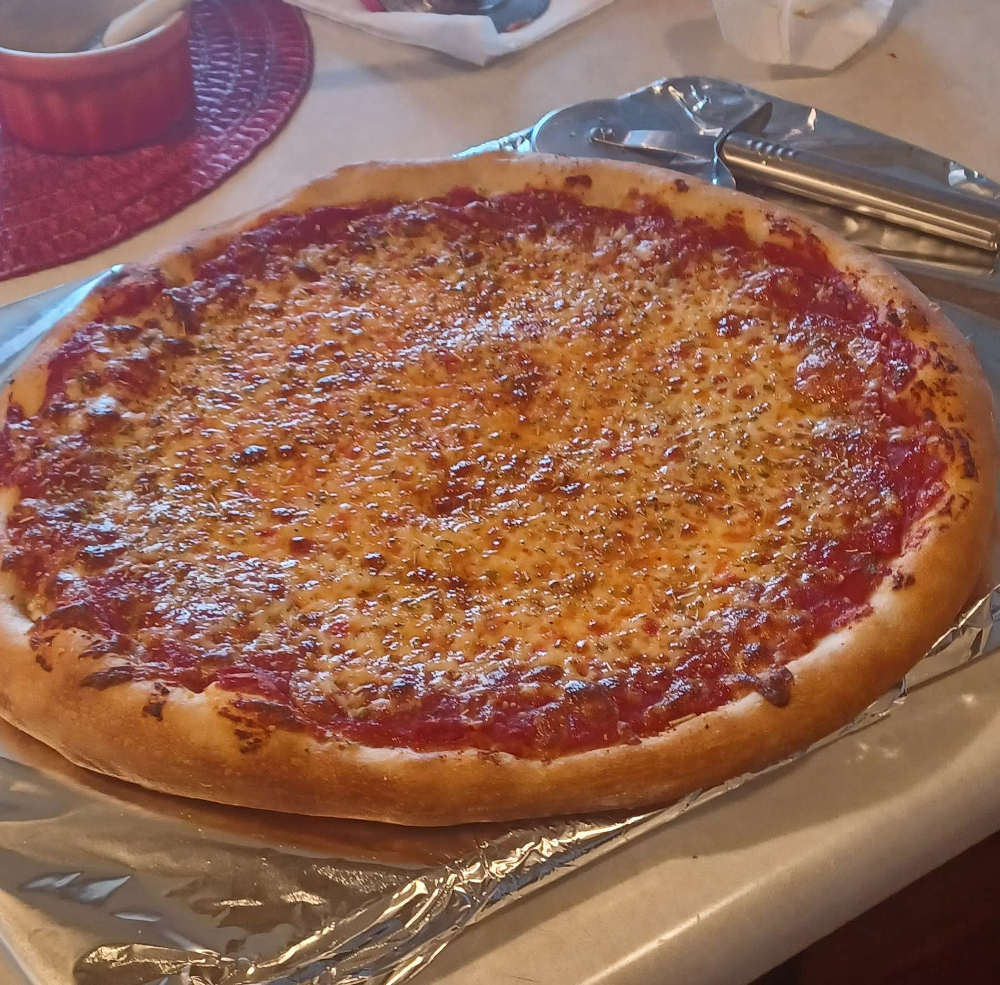

AUTHENTIC NEW YORK-STYLE PIZZA

A New York–style pizza is one of the most iconic and recognizable types of pizza in the world. Here are its key characteristics:
Crust
- Thin and crisp yet foldable: The hallmark of New York pizza is its large, thin crust that's crisp on the bottom but soft enough to fold in half when you eat a slice.
- Hand-tossed dough: Made from high-gluten bread flour, giving it chewiness and structure.
- Slightly charred edges: Cooked directly on a stone deck at high heat (around 500–600°F), resulting in a slightly blistered, golden-brown underside.
- Flavorful base: Often developed from a long fermentation process, which adds a subtle tang and depth to the dough.
Sauce
- Simple and balanced: Made with crushed or pureed tomatoes, salt, oregano, and sometimes a touch of garlic or sugar.
- Lightly applied: enough to add flavor but not overwhelm the crust.
Cheese
- Mozzarella dominant: Typically uses low-moisture, whole-milk mozzarella for its stretchiness and even melt.
- Even coverage: Spread uniformly over the sauce, but not too thick -- the focus remains on balance.
Size and Shape
- Large and wide slices: A whole pizza usually measures 18 inches or more in diameter.
- Triangular slices: Traditionally cut into 8 large, foldable wedges.
- Sold by the slice: Common in New York pizzerias, where slices are reheated in the oven before serving.
Flavor and Experience
- Savory, slightly salty, and rich in umami.
- Best eaten on the go: Often folded in half and eaten while walking -- a true New York tradition.
- Minimal toppings by default: A plain "cheese slice" (just sauce and mozzarella) is the gold standard, though pepperoni is the most popular topping.
INGREDIENTS
AMOUNTS FOR TWO 16" PIZZAS
- 498g High-gluten Flour (4 Cups)
- 50g Sifted Whole Wheat Flour (6 1/3 Tbsp)
- 356g Water (11.9 fl oz)
- 16.4g Salt (volume can vary - check your salt container for conversions)
- 2.7g Instant Dry Yeast (7/8 tsp)
- 8.2g Granulated Sugar (2 tsp)
- TOTAL DOUGH WEIGHT: 932g (466g Per Pizza)
- I recommend 188g of Sauce (6.4 fl oz), 188g of Mozzarella (about 1 2/3 Cup, grated), and 11g of Pecorino (2 Tbsp, ungrated) Per Pizza, but you can adjust this to suit your tastes.
IF USING A 28OZ CAN OF TOMATOES
- 1 28oz Can of Tomatoes
- 2g Salt, plus more to taste (volume can vary - check your salt container for conversions)
- 12g Sugar (1 Tbsp)
- 2 tsp Dried Oregano (~2g)
- NOTE: The consistencies of different tomato brands can vary, so feel free to add more water (or strain liquid off) until you achieve the approximate sauce consistency shown in the video.
IF USING COMMERCIAL REDPACK TOMATOES
- 1 105oz Can of Tomatoes
- 26oz Water
- 11.3g Salt, plus more to taste (volume can vary - check your salt container for conversions)
- 45g Sugar (3 3/4 Tbsp)
- 7.5 tsp Dried Oregano (~7.5g)
Cheese
- Low-Moisture, Full-Fat (Whole Milk) Mozarella
- Pecorino Romano
- NOTE: Exact amounts will depend on the size and number of pizzas you are making.
Steps
MAKING THE DOUGH
- In a large bowl, mix all flour and water. Cover the bowl and let the dough rest for 20 minutes to autolyse.
- Add the salt, sugar, and yeast, and knead the dough until all ingredients are fully incorporated. Cover the dough again, and let it rest for another 20 minutes (optional, but highly recommended. If you don’t have 20 minutes, even 5 minutes will help).
- Knead the dough for 5-7 minutes, then form it into a ball and place it back into the bowl.
- Cover the bowl, and allow the dough to rise until at least doubled (and up to tripled) in size. This should take about 1-3 hours at room temperature.
- Divide the dough into the desired number of portions, and form each into a very taught ball. Place each ball into a wide container lined with olive oil, then cover and transfer the containers the refrigerator. Allow the dough to ferment in refrigerator for 2-3 days before using.
- (NOTE: If you would like to use the dough the same day, simply leave it at room temperature, and it will be ready to bake in 2-3 more hours).
MAKING THE SAUCE
- Combine all ingredients and blend thoroughly. The sauce can be stored in the refrigerator for up to 3 days before using.
ASSEMBLING AND BAKING THE PIZZA
- When ready to bake, remove dough from refrigerator and preheat your oven to 550F (287C) (with your baking steel inside, set to the oven’s second-highest rack) for about 90 minutes before baking.
- (NOTE: If you are using a stone rather than a steel, you should place it on your oven’s lowest rack to allow it to get as hot as possible).
- When the oven and steel are preheated, shape your dough and place it onto a wooden pizza peel, dusted with semola flour.
- Top the pizza first with sauce, then (optionally) a bit more oregano, then pecorino, then mozzarella.
- (NOTE: Avoid adding too much sauce or cheese in the center of the pizza, as that can create a soggy crust).
- Bake the pizza for 4-5 minutes until the cheese is fully melted, and has just barely started to separate, optionally rotating the pizza halfway through to ensure even browning. If you plan to reheat the slices, sure to leave your oven running after removing the pizza.
- (TIP: If you find that the bottom of the pizza tends to burn, you can insert a pizza screen underneath the pizza during the final 1-2 minutes of baking.)
- Allow the pizza to cool on a wire rack for at least 15 minutes, then slice it and reheat each slice on your steel (with the oven still set to 550F) for 60-90 seconds, until the bottom is charred to your liking.